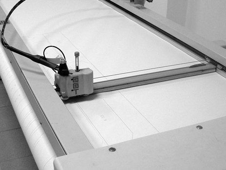
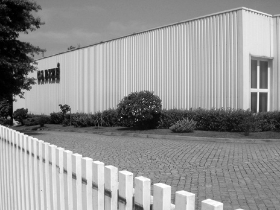

Confeção de vestuário · Santo Tirso
Da preparação
à peça.
Moldes, corte, costura e acabamentos.
Conheça as etapas apresentadas pela Carizé.

O processo
Quatro etapas.
Uma apresentação ligada.
Selecione uma etapa para ver a descrição e a fotografia.

Etapa 01 / 04
Preparar os moldes.
A Carizé descreve a criação e o escalonamento de moldes como parte do seu processo de produção.
A preparação de um molde e a explicação de uma escolha feita nessa etapa, num trabalho que possa ser divulgado.
Fotografias já publicadas pela Carizé, sem data de captação indicada. Os exemplos de filmagem são propostas de Ricardo Almeida; não existe vídeo produzido para esta demonstração.

A empresa
Vestuário produzido
em Santo Tirso.
A Carizé — Empresa de Confecções, Lda. apresenta a confeção de vestuário em série, incluindo camisas e blusas, como a sua atividade.
Esta demonstração organiza informação do website existente. Características, capacidade e condições de cada projeto devem ser confirmadas diretamente com a empresa.
Consultar a Carizé no site oficialDa informação ao contacto
O que pretende produzir?
Um pedido pode começar pelo tipo de peça e pelo ponto em que o projeto se encontra.
Simulação local. Nenhum dado é guardado ou enviado.
Exemplo de mensagem
Nada foi enviado. Num website final, a forma de receber os pedidos seria definida com a Carizé.